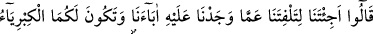

birbirleri hakkında kötüleyici şeyler söylediklerinde de: “Bunların arasında “”
tekâvül birbirini ayıplama vardır.” denilir. Ayıplama mânâsındaki kavl kelimesinin
benzeri, “putlarımızı yeren (zikreden) bir genç duymuştuk.” (el-Enbiya, 21/62)
âyetindeki “zikr” kelimesidir.
“Bu sihir midir?” son derece açık, âşikâr, gözle görülen ve gören gözlere sâhip
bulunan hiç kimsenin şüphe edemeyeceği kadar bilinen bu gerçek sihir midir?! Bu ifade,
Hz. Musa’dan gelen ve hakkın sihir olduğu sözünü kötüleyen bir sözdür.
“Halbuki sihirbazlar iflâh olmazlar.” dedi.” Yani “Buna sihir mi diyorsunuz, halbuki
sihir yapanlar iflâh olmazlar.” Yani istedikleri hiçbir şeyi elde edemezler; kerih
gördükleri hiçbir şeyden kurtulamazlar. Böyle bir fiilin benim gibi Allah tarafından
desteklenen, her istediğini elde edip sakınılan her şeyden kurtulan kişilerden olan
birinden sâdır olması nasıl mümkün olabilir?
78. Dediler ki: “Sen bizi, babalarımızı üzerinde bulduğumuz şeyden çeviresin ve
yeryüzünde büyüklük yalnız ikinizin olsun diye mi bize geldin? Biz size inanacak
değiliz.”
“Dediler ki:” Bu cümle, açıklama için olan bir başlangıç cümlesidir. Sanki “Musa,
Fir’avn’la kavmine dediklerini deyince, Fir’avn ve adamları ona ne dedi?” diye bir
soru sorulmuş ve cevaben şöyle denilmiştir: Karşı delil getirmekten âciz bir vaziyette
şöyle dediler: “Sen bizi,” bu ifâde sadece Musa (a.s.)’ı muhâtap almaktadır. Çünkü asâ
ve beyaz el mûcizeleri onun elinde zâhir olmuştur. “babalarımızı üzerinde bulduğumuz
şeyden” yani putlara tapınmaktan “çeviresin ve yeryüzünde” yâni Mısır topraklarında
“büyüklük” hükümranlık, çünkü hükümdarlar büyüklük ve yücelikle mevsûfturlar.
“yalnız ikinizin olsun diye mi bize geldin?” Sizin yönetiminizi kendimizinkine tercih
etmeyiz. Musa ve Hârun’un davetini kabul etmeyişlerine sebep olarak bu iki gerekçeyi
gösterince bu gerekçelere dayanan hükmü açıkça belirterek şöyle dediler: “Biz size
inanacak değiliz.” getirdiklerinizi tasdik edecek değiliz.
Fir’avn kavminin babalarının inancı ile ilgili olarak Mütfî Sa‘dî şöyle der: Bu
konuda ilk akla gelen Allah’tan başkasına tapmalarıdır. Çünkü onlar, Fir’avn’a
tapıyorlardı.